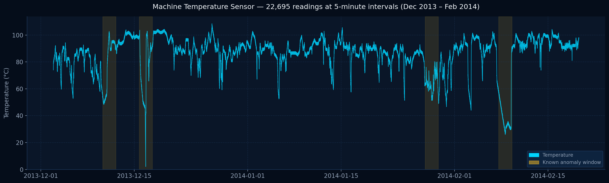
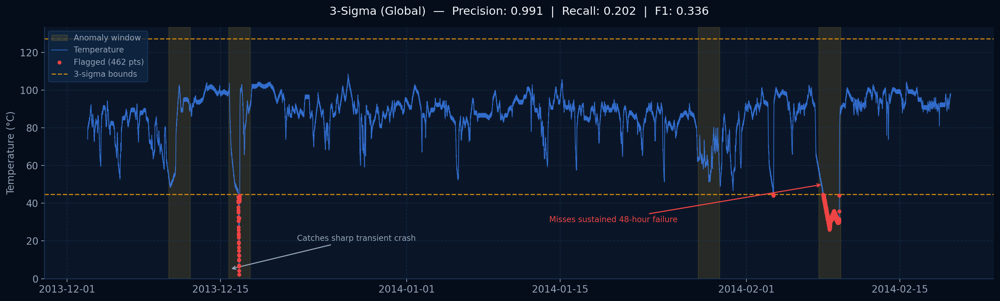
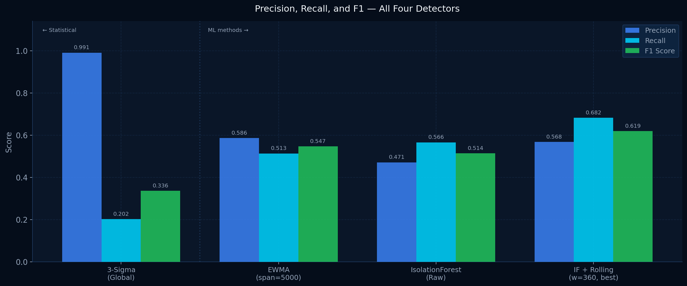
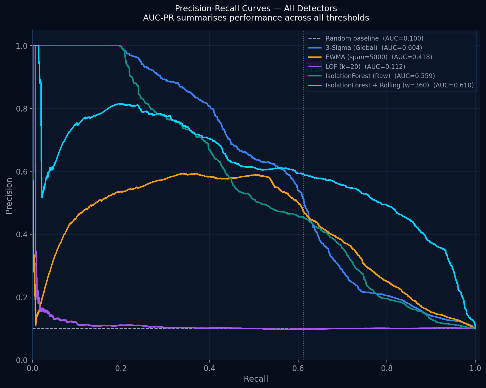
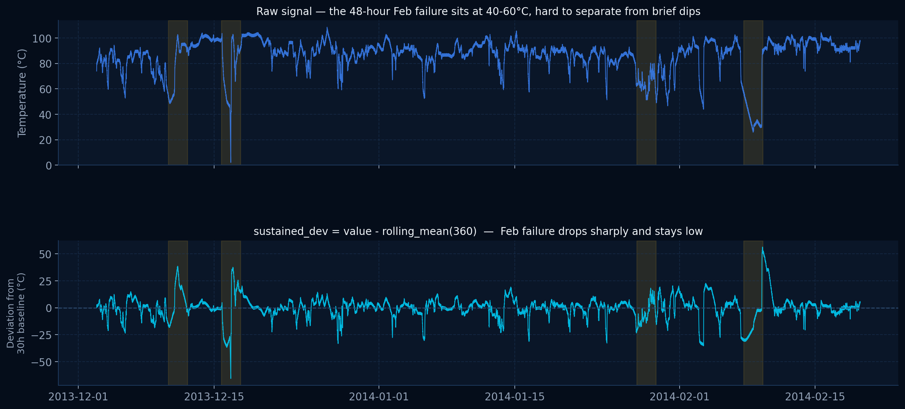
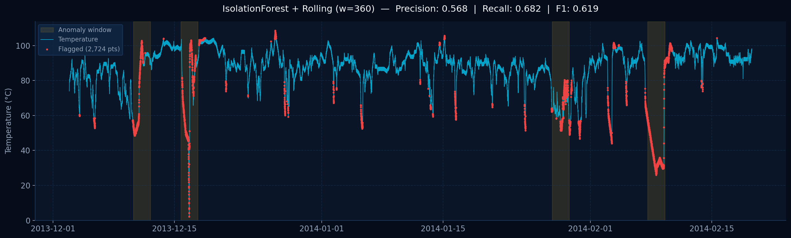
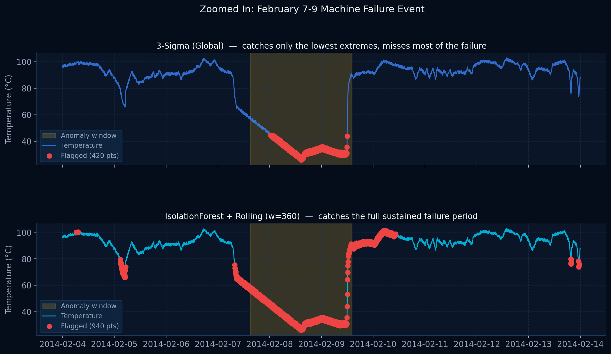
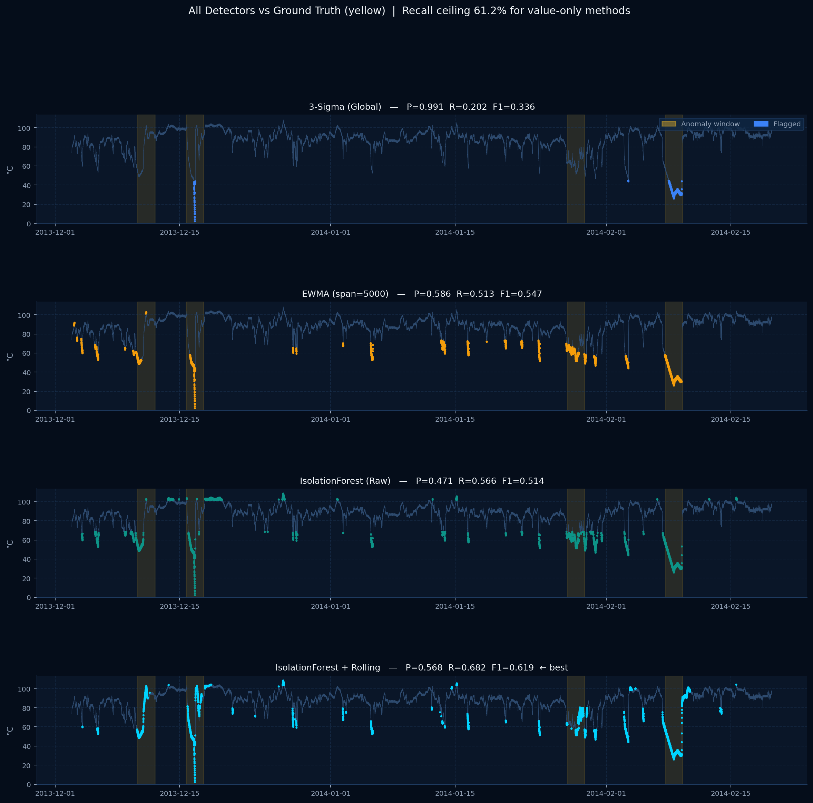
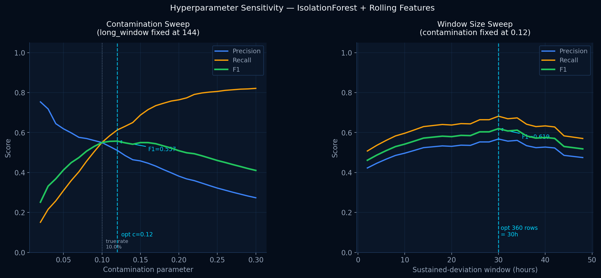

BioSentinel monitors cold-chain sensors and lab instruments. It flags equipment failures and potential tampering before a pharmaceutical batch is ruined.
Cold-chain equipment and lab instruments stream data constantly. Small anomalies go unnoticed until a drug batch is already ruined. BioSentinel catches them as they happen.
A refrigerator storing vaccines or insulin can fail silently at night. By morning the batch is ruined and patients go without.
In pharmaceutical settings, tampered or miscalibrated sensors can hide contaminated batches from quality control behind fake-normal readings.
Simple thresholds miss slow sustained failures. Advanced systems exist but are proprietary and unauditable. There is no open baseline anyone can inspect.
Sensor integrity is a security problem, not just a maintenance one. BioSentinel treats it with the same rigor applied to network intrusion detection.

BioSentinel builds detectors in order of complexity. Each step is driven by where the previous one failed. Every design choice is backed by data from a hyperparameter sweep.
Flag anything more than 3 standard deviations from the global mean. A pharma auditor can verify every flag in two lines of arithmetic. Sets the floor that every future model must beat.

Uses an exponentially weighted baseline instead of a global mean. With span=5000 (roughly 17 days at 5-minute intervals), the baseline adapts very slowly, staying stable through long failure events.

Two well-known algorithms were tested and both performed poorly. Their failure modes reveal important properties of sustained failures in time-series data.

Build 200 random isolation trees. Points isolated in fewer cuts are anomalies. Uses the global distribution, not a local window, so it is immune to the adaptation problem that kills rolling methods.

Adds one engineered feature: sustained_dev = value - rolling_mean(360). A hyperparameter sweep over 24 window sizes confirmed 360 rows (30 hours) is optimal. Both precision and recall improve over raw IsolationForest.

All metrics computed against four ground-truth windows from the Numenta Anomaly Benchmark. No cherry-picking. The theoretical ceiling is documented and then broken.
sustained_dev as a second feature, providing temporal context the raw value cannot.
| Detector | Type | Flagged | TP | FP | Precision | Recall | F1 |
|---|---|---|---|---|---|---|---|
| 3-Sigma (Global) | Statistical | 462 | 458 | 4 | 0.991 | 0.202 | 0.336 |
| Rolling 3-Sigma | Statistical | 703 | 199 | 504 | 0.283 | 0.088 | 0.134 |
| EWMA (span=5000) | Statistical | 1,983 | 1,163 | 820 | 0.586 | 0.513 | 0.547 |
| Hampel Filter | Statistical | 691 | 74 | 617 | 0.107 | 0.033 | 0.050 |
| LOF (k=20) | ML | 2,724 | 298 | 2,426 | 0.109 | 0.131 | 0.119 |
| IsolationForest (Raw) | ML | 2,724 | 1,283 | 1,441 | 0.471 | 0.566 | 0.514 |
| IsolationForest + Rolling | ML + FE | 2,724 | 1,546 | 1,178 | 0.568 | 0.682 | 0.619 |


Contamination and window size were each swept across a full range of values. The optimal settings were selected by maximizing F1 on the ground-truth labels — documented so anyone can reproduce it.

The true anomaly rate in this dataset is 10.0% (2,268 of 22,695 readings). A sweep from 0.02 to 0.30 found F1 peaks at contamination=0.12. The IsolationForest threshold calibration is slightly conservative, so setting contamination above the true rate compensates and yields the best precision-recall balance.
A sweep from 24 to 576 rows found F1 peaks at 360 rows — 30 hours at 5-minute intervals. The February failure lasts roughly 48 hours. A 30-hour baseline does not fully adapt into the failure, keeping sustained_dev clearly negative throughout the entire event. Shorter windows normalize the failure; longer ones lose resolution near the onset.
Four findings that are non-obvious and each backed by data run on this dataset.
A threshold is a single scalar — it only says "too high" or "too low." IsolationForest scores anomalies by how few random cuts it takes to isolate a point. With two input features it operates across a 2D space, detecting combinations that no single numeric threshold could capture.
Local Outlier Factor compares the local density of each point to that of its neighbors. The 48-hour February failure creates roughly 576 readings in a dense cluster. Each anomalous point has neighbors with identical density, so the LOF score stays low. LOF was designed for isolated outliers, not large sustained anomaly regions.
38.8% of labeled anomaly points have normal-range temperatures — no raw-value detector can flag them. Adding sustained_dev gives the model a second dimension: a reading of 50°C with sustained_dev = -30 is fundamentally different from a brief 50°C dip with sustained_dev = +2. One feature breaks the apparent ceiling.
F1 measures performance at a single threshold. AUC-PR (0.610 for IF + Rolling) measures ranking ability across all thresholds — it answers whether the model consistently assigns higher anomaly scores to true positives than to normal points. AUC-PR is the standard evaluation metric for imbalanced detection problems.
I built BioSentinel because I wanted to work at the intersection of machine learning, biomedical data, and security. The idea that one sensor reading could be the difference between a safe drug batch and a compromised one is what got me started.
The design principle is honesty over polish. Every detector is motivated by the failure of the one before it. The theoretical recall ceiling is documented. The hyperparameter tuning is reproducible with one command. The detectors that failed — Hampel and LOF — are included and explained rather than quietly dropped.
If you are a researcher or student working with biomedical time-series data, this codebase is open, readable, and built to be extended.